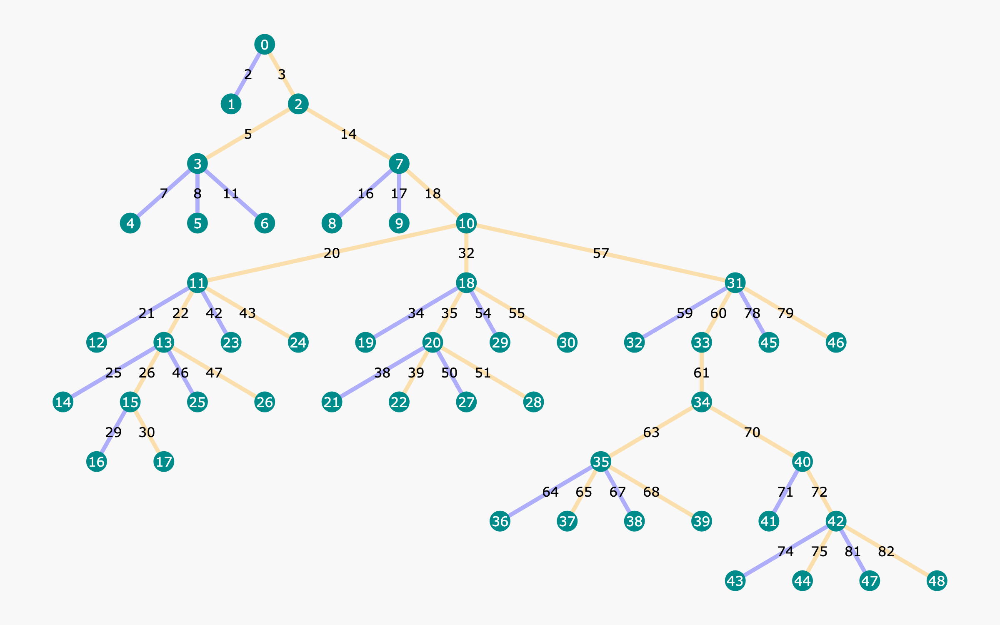

第 28 章 · 过程奖励模型与搜索
在复杂多步逻辑推演与高阶数理证明中，仅仅依据最终答案正确与否进行端到端打分的结果奖励模型（ORM），面临着极其严峻的信度分配模糊与假阳性“碰巧猜对”困境。过程奖励模型（PRM）通过为推理链中的每一个细粒度思维步骤提供独立的正确性概率评估，不仅重构了多步推理的信用分配机制，更使得推理早期的主动错误检测、分支动态剪枝以及测试时树搜索引导成为可能。本章系统解构 PRM 的数学建模机理，深入分析从 PRM800K 人工过程监督到 Math-Shepherd 与 OmegaPRM 自动化合成数据流水线的演化历程，并全面呈现 PRM 与最佳优先重排（Best-of-N）、束搜索（Beam Search）及蒙特卡洛树搜索（MCTS）深度结合的工业级实现与工程避坑指南。
1. 结果奖励模型（ORM）的局限与过程奖励模型（PRM）的提出
在大语言模型强化学习与评估体系的早期阶段，以 InstructGPT 为代表的后训练流水线普遍依赖结果监督奖励模型（Outcome-supervised Reward Model, ORM）。ORM 的数学形式极其直接：输入完整的提示词 \( x \) 和模型生成的完整解题轨迹 \( y = (s_1, s_2, \dots, s_K) \)，ORM 模型直接输出一个标量值 \( R_{\mathrm{ORM}}(x, y) \in [0, 1] \)。这种奖励形式在开放式对话、文本摘要与通用偏好对齐中表现良好，但在逻辑推导、算法竞赛与数学证明等严谨多步任务中，却暴露出根本性的理论缺陷与实践瓶颈。
1.1 信用分配危机与假阳性陷阱
在涉及数十步连续递推的高难度推理任务中，ORM 存在两大难以克服的核心矛盾：
- 信度分配难题（Credit Assignment Problem）：假设一条包含 15 个步骤的推理轨迹中，模型在第 2 步发生了一处符号推导笔误，但从第 3 步到第 15 步的逻辑推演均严格遵循了前述错误假定，最终由于前置错误导致最终答案不正确。ORM 只能在轨迹终点赋予全局 0 分（或极低的分值）。策略网络在进行梯度反向传播时，完全无法分辨究竟是哪一个步骤造成了溃败，从而导致后 13 步中展现出的高级代数技巧被一并抹杀。反之，若整条链条全部正确，ORM 赋予的 1 分也无法明确告诉模型究竟哪一步是打破僵局的关键洞察（Key Breakthrough）。
- 假阳性与作弊解答（False Positives & Luckiness）：在初等代数与数值计算中，经常出现模型在前半部分推导出现一处负号错误，而在后半部分又由于另一种算术失误偶发性地抵消了前一次错误，最终竟“碰巧”输出了与标准答案完全吻合的数值。ORM 面对这种由荒谬逻辑堆砌而成的解答会毫不犹豫地赋予满分，这直接诱导强化学习策略网络固化错误的伪规则，严重恶化模型的泛化逻辑能力。
- 缺乏早停与在线剪枝机制：在测试时计算（Test-time Compute）扩展中，若使用 ORM 作为验证器（Verifier），系统必须等待生成器完整生成数千甚至上万个 Token 的长思维链，才能由 ORM 进行后验打分。这意味着大量宝贵的 GPU 推理显存与解码算力被持续虚掷在早已不可逆的错误分支上，搜索效率极低。
1.2 过程监督奖励模型（PRM）的形式化定义
为了解决 ORM 的深层缺陷，学术界与工业界提出了过程监督奖励模型（Process-supervised Reward Model, PRM）。PRM 的核心理念是：对长推理链中的每一个思维步骤执行细粒度的即时评估。设提示词为 \( x \)，解题过程被自然切分为 \( K \) 个离散步骤序列 \( (s_1, s_2, \dots, s_K) \)。PRM 评估的是在给定问题上下文与前 \( k-1 \) 个历史步骤的条件下，当前第 \( k \) 个动作步骤 \( s_k \) 的局部正确性概率：
\[ r_k = \mathrm{PRM}(s_k \mid x, s_1, s_2, \dots, s_{k-1}) = P(\mathrm{Step\ } k \text{ is correct and constructive} \mid x, s_{\le k-1}) \]通过输出步进式的概率向量 \( (r_1, r_2, \dots, r_K) \)，PRM 不仅赋予了评估系统透明的可解释性（清楚指出推理链在第几步发生脱轨），更为现代搜索算法提供了精准的启发式引导函数（Heuristic Function）。
| 对比维度 | 结果奖励模型（ORM） | 过程奖励模型（PRM） |
|---|---|---|
| 打分粒度 | 整条解题文本对应一个全局标量（Coarse-grained） | 每个逻辑推导步骤对应一个局部概率（Step-level fine-grained） |
| 错误定位能力 | 无定位能力，属于端到端黑盒判据 | 精准定位推理链上的第一处错误步骤（First Error Step） |
| 假阳性抵御 | 极易被逻辑荒谬但答案巧合的解答所蒙骗 | 在第一处错误发生时即断崖式判负，具备极强鲁棒性 |
| 搜索算法契合度 | 仅能用于生成结束后的候选采样重排（Best-of-N） | 原生适配步进式束搜索（Beam Search）与 MCTS 动态剪枝 |
| 数据构建难度 | 极低：规则判卷或比对 ground truth 答案即可自动化生成 | 极高：人工逐步核查成本极其昂贵，依赖复杂树搜索合成 |
| 训练计算开销 | 低：序列级损失反向传播 | 中/高：长序列中包含多个步骤掩码与多点分类损失计算 |
2. PRM 标注难题与数据演化：从 PRM800K 到自动化合成流水线
虽然 PRM 在理论上拥有绝对优势，但其核心痛点在于监督数据的获取极其困难。如何低成本、高质量、大规模地为每一个推理步骤打上准确的标签，是推动过程奖励模型走向工业实用的关键命题。
2.1 Lightman et al. PRM800K：人工过程监督的经典里程碑
2023 年，OpenAI 团队在论文 Let's Verify Step by Step（Lightman et al.）中发布了轰动业界的 PRM800K 数据集。该数据集包含针对 MATH 竞赛题目的 80 万个人工细粒度步骤标注。OpenAI 制定了严格的人工标注协议，标注者针对每一个思维步骤打出以下三类互斥标签之一：
- 积极步骤（Positive,
+1）：当前推导步骤完全正确，并且对于解决该问题提供了积极、有价值的推进。 - 中性步骤（Neutral,
0）：该步骤在数学上是正确的，但没有带来实质性的逻辑推进（例如单纯重抄题干已知条件，或进行毫无意义的代数恒等重写）。 - 消极步骤（Negative,
-1）：该步骤包含了代数计算错误、逻辑推论错误或引入了矛盾的假设，导致整条推理链走向失败。
实验结果表明，在相同的 MATH 评测集上，由 PRM800K 训练的过程奖励模型在引导 Best-of-N 搜索时，其解题准确率显著超越了参数规模相当甚至更大的 ORM 模型。然而，PRM800K 的代价极其高昂：标注 80 万个步骤耗费了大量具有专业数学背景的高校人员数千小时的人工劳作，且完全无法随着题库的扩张实现自适应扩展。这促使研究界迫切寻求自动化合成方案。
2.2 自动化过程合成：Math-Shepherd 思想
为了摆脱人工标注的算力与人力桎梏，Wang 等人（2023）提出了 Math-Shepherd 自动化标注流水线。其核心直觉非常巧妙：通过后向蒙特卡洛采样来反推中间步骤的潜力和质量。对于策略模型生成的一个中间状态序列 \( (x, s_1, s_2, \dots, s_k) \)，Math-Shepherd 并不依赖人工阅读，而是直接调用生成器从状态 \( s_k \) 开始，继续独立采样展开 \( N \) 条完整的后续推理轨迹直至最终答案。若在这 \( N \) 条展开轨迹中，有相当比例的轨迹能够算出正确答案，则表明步骤 \( s_k \) 将系统置于一个高可解性的状态空间中；若无论后续如何展开，所有轨迹最终全部失败，则有极大概率说明步骤 \( s_k \) 已经引入了不可逆转的致命错误。
2.3 蒙特卡洛树搜索与二分查找合成：OmegaPRM
Math-Shepherd 的朴素展开虽然摆脱了人工，但采样算力开销巨大。DeepSeek 团队在 2024 年提出的 OmegaPRM 进一步将蒙特卡洛树搜索（MCTS）与高效的二分搜索（Binary Search）算法结合，极大革新了合成过程奖励数据的效率与精度。

在一条长达数十步的错误解答中，往往只有一步是真正的转折点。OmegaPRM 采用二分查找逻辑：首先在推理链的中间步骤 \( k = \lfloor K/2 \rfloor \) 处进行蒙特卡洛多次 Rollout。如果后续展开能够命中正确答案，说明当前步骤及前半部分是完全正确的，真正的逻辑漏洞必然潜藏在后半段；反之，若后续展开全部失败，则说明前半段中已经出现了致命缺陷。通过将线性单步探测转变为 \( O(\log K) \) 复杂度的二分收敛，OmegaPRM 以极高的算力利用率精准定位出每条链条中的“第一错误步骤”（First Erroneous Step），并以此为基准快速构建出百万级高精度正负步骤样本对。
3. 过程奖励模型的网络架构与训练目标
在实际工程落地中，PRM 通常采用与生成器底模相同体系结构的因果语言模型（Causal LM）。然而，其打分头与训练损失函数有别于传统的自回归下一词预测任务。
3.1 分词器改造与步骤标识符（Step Delimiter）
为了让模型明确感知每一个步骤的终结点，通常在分词器中引入一个专用的特殊步骤标记（例如 <|step_end|>），或者直接利用双换行符 \n\n 作为边界。在 Transformer 的前向传播中，PRM 仅提取每一个 <|step_end|> 位置上的隐藏状态向量 \( \mathbf{h}_k \in \mathbb{R}^d \)，通过线性分类头映射为一个二元分类或三元分类的 Logits。
3.2 掩码多步骤交叉熵损失函数
在训练 PRM 时，一个长样本序列内包含多个步骤，但并非所有 Token 都需要计算奖励损失。必须设计专门的掩码机制（Step-level Masking），仅在步骤结束位置处计算真实标签 \( y_k \in \{0, 1\} \) 的二元交叉熵（Binary Cross-Entropy, BCE）损失。以下是 PRM 训练损失的核心数学表达：
\[ \mathcal{L}_{\mathrm{PRM}}(\theta) = -\frac{1}{\sum_{i} M_i} \sum_{i=1}^T M_i \left[ y_i \log \sigma(\mathbf{w}^\top \mathbf{h}_i(\theta)) + (1 - y_i) \log (1 - \sigma(\mathbf{w}^\top \mathbf{h}_i(\theta))) \right] \]其中，\( M_i \in \{0, 1\} \) 是布尔掩码指示变量，当且仅当第 \( i \) 个 Token 为某一步骤的终结符时，\( M_i = 1 \)，其余位置均为 0。以下是基于 PyTorch 的工业级 PRM 损失模块实现代码。
import torch
import torch.nn as nn
import torch.nn.functional as F
from typing import Optional, Dict
class PRMStepLoss(nn.Module):
"""
用于过程奖励模型（PRM）的多步骤掩码二元交叉熵损失函数
仅在特定步骤标记符（如 <|step_end|>）处回传梯度
"""
def __init__(self, pos_weight: float = 1.0, label_smoothing: float = 0.05):
super().__init__()
self.pos_weight = torch.tensor([pos_weight])
self.label_smoothing = label_smoothing
def forward(
self,
step_logits: torch.Tensor, # [Batch_Size, Seq_Len] 步骤打分头输出
labels: torch.Tensor, # [Batch_Size, Seq_Len] 浮点标签 (0.0 表示错误, 1.0 表示正确)
step_mask: torch.Tensor # [Batch_Size, Seq_Len] 布尔掩码 (仅步骤终结符处为 True)
) -> Dict[str, torch.Tensor]:
"""
计算掩码位置处的加权二元交叉熵损失
"""
# 展平以便统一索引
flat_logits = step_logits.view(-1)
flat_labels = labels.view(-1)
flat_mask = step_mask.view(-1).bool()
# 仅筛选出具有有效步骤标注的 Token
active_logits = flat_logits[flat_mask]
active_labels = flat_labels[flat_mask]
if active_logits.numel() == 0:
return {
"loss": torch.tensor(0.0, device=step_logits.device, requires_grad=True),
"active_steps": torch.tensor(0)
}
# 标签平滑软化
if self.label_smoothing > 0:
active_labels = active_labels * (1.0 - self.label_smoothing) + 0.5 * self.label_smoothing
device = step_logits.device
bce_loss = F.binary_cross_entropy_with_logits(
active_logits,
active_labels,
pos_weight=self.pos_weight.to(device),
reduction="mean"
)
# 计算预测准确率用于监控指标
preds = (torch.sigmoid(active_logits) > 0.5).float()
acc = (preds == (active_labels > 0.5).float()).float().mean()
return {
"loss": bce_loss,
"accuracy": acc,
"active_steps": torch.tensor(active_logits.numel())
}4. 搜索算法与大语言模型结合全景
当训练获得高精度的 PRM 后，它将作为环境中的即时启发式评估器（Heuristic Evaluator），与语言模型生成策略 \( \pi_\theta \) 协同工作。测试时计算扩展（Test-time Compute Scaling）的核心，正是利用各种搜索算法在巨大的推理拓扑空间中进行高效的探索与利用。
4.1 最佳优先重排（Best-of-N with PRM Scoring）
在 Best-of-N 架构中，系统通过高温采样独立生成 \( N \) 条完整的解答候选。PRM 对每条候选轨迹中的各个步骤给出置信度 \( (r_1, r_2, \dots, r_K) \)。由于不同轨迹的步骤数量往往不同，如何将这一向量聚合为标量分值决定了重排的优劣：
- 最低值瓶颈（Minimum Aggregation / Bottleneck）：\( S_{\mathrm{min}} = \min_{k=1}^K r_k \)。该策略基于逻辑链条的“木桶原理”——只要推理过程中出现哪怕一处低分，整个解答的置信度便由这一瓶颈所决定。在工程实践中，Minimum 聚合表现出最强的抗长度偏差能力。
- 几何平均聚合（Geometric Mean）：\( S_{\mathrm{geom}} = \left(\prod_{k=1}^K r_k\right)^{1/K} \)。消除了步骤长度带来的指数级自然衰减，兼顾了所有步骤的平均质量。
- 乘积聚合（Product Aggregation）：\( S_{\mathrm{prod}} = \prod_{k=1}^K r_k \)。假设各步骤独立正确。然而在序列较长时，连乘会导致数值迅速下溢，并严重惩罚更长但推导详尽的优质解答。
4.2 步进式束搜索（Step-level Beam Search）
不同于 Best-of-N 的事后筛选，束搜索在每一步推理展开时即刻介入。假设当前的束宽（Beam Width）为 \( B \)。在当前时间步，每个存活的推导前缀独立生成 \( M \) 个候选的后续推导步骤，共产生 \( B \times M \) 个候选状态分支。PRM 对这些分支的新增步骤打分，计算累计路径价值，仅保留得分最高的前 \( B \) 个分支进入下一轮，其余分支直接被剪枝销毁。这种方式避免了算力在错误分支上的空转消耗。
4.3 蒙特卡洛树搜索（MCTS）的深度融合
束搜索是一种贪心启发式搜索，若在早期步骤中 PRM 偶发给出了错误的打分，可能会导致全局最优解被过早剪枝。为了实现更具探索深度的求解，学术界全面引入了蒙特卡洛树搜索（MCTS）。在 MCTS 框架中：
- 树状态（State）：由题干及至今为止生成的所有步骤字符串构成的状态节点 \( S \)。
- 动作（Action）：由生成模型输出的一个新的候选推导步骤 \( A \)。
- 先验概率（Prior）：由生成器模型在生成当前步骤时的对数概率归一化得到 \( P(A \mid S) \)。
- 价值更新（Value Update）：结合 PRM 的单步判定与终局最终答案验证反馈，通过 PUCT 公式进行探索与利用平衡选择。
| 搜索算法范式 | 探索机制与拓扑 | 推理算力消耗（FLOPS） | 核心优势 | 主要局限 |
|---|---|---|---|---|
| Best-of-N 独立采样 | 完全并行采样 N 条完整解答，事后重排 | \( O(N \cdot L) \) | 工程部署极其简单，无状态交互，高度契合批处理 | 中间推导无法共享 KV 缓存，错误分支无法提前终止 |
| 步进式束搜索（Beam Search） | 按步骤分层前推，每步保留 Top-B 最优前缀 | \( O(B \cdot M \cdot K) \) | 步骤级动态剪枝，早期拦截错误，GPU 内存复用率高 | 容易陷入局部贪心陷阱，难以回溯推翻先前的错误前缀 |
| 蒙特卡洛树搜索（MCTS） | 基于 PUCT 准则在树状图中非对称动态展开 | \( O(\mathrm{Simulations} \cdot L) \) | 兼顾探索与利用，支持自适应回溯与非线性多路对比 | 工程调度极其复杂，树节点 KV 缓存碎片化严重，并发利用率低 |
5. PRM 驱动的步骤打分与 Best-of-N 加权重排实战
下面给出一个完整可运行的生产级 Python 模块，演示如何加载轻量级 PRM 模型，对多步推理样本切分步骤、计算逐步置信度，并基于 Minimum 瓶颈聚合与加权多数投票算法（Weighted Majority Voting）实现答案重排。
import torch
import torch.nn.functional as F
from transformers import AutoTokenizer, AutoModelForCausalLM
from typing import List, Dict, Any, Tuple
from collections import defaultdict
import numpy as np
class StepLevelPRMScorer:
"""基于双换行符切分的工业级 PRM 步骤打分与重排引擎"""
def __init__(self, model_name_or_path: str, device: str = "cuda"):
self.device = device
self.tokenizer = AutoTokenizer.from_pretrained(model_name_or_path, trust_remote_code=True)
self.model = AutoModelForCausalLM.from_pretrained(
model_name_or_path,
torch_dtype=torch.bfloat16,
device_map=self.device
)
self.model.eval()
# 提取用于标识打分正负的特殊 token id（在实际开源 PRM 如 Qwen2.5-Math-PRM 中常用 '+' 与 '-'）
self.pos_token_id = self.tokenizer.encode("+")[-1]
self.neg_token_id = self.tokenizer.encode("-")[-1]
def split_steps(self, reasoning_text: str) -> List[str]:
"""将长思维链文本拆分为离散步骤列表"""
raw_steps = [s.strip() for s in reasoning_text.split("\n\n") if len(s.strip()) > 0]
steps = []
for s in raw_steps:
cleaned = s.replace("<think>", "").replace("</think>", "").strip()
if cleaned:
steps.append(cleaned)
return steps
@torch.no_grad()
def score_single_step(self, prompt: str, history_steps: List[str], current_step: str) -> float:
"""评估单个推导步骤在历史上下文条件下的置信概率"""
prefix = f"Problem: {prompt}\n\n"
for i, step in enumerate(history_steps):
prefix += f"Step {i+1}: {step}\n\n"
step_input = prefix + f"Step {len(history_steps)+1}: {current_step} Evaluator:"
inputs = self.tokenizer(step_input, return_tensors="pt").to(self.device)
logits = self.model(**inputs).logits[:, -1, :]
pos_logit = logits[0, self.pos_token_id]
neg_logit = logits[0, self.neg_token_id]
# 对正负 logit 进行 softmax 归一化
probs = F.softmax(torch.stack([neg_logit, pos_logit]), dim=0)
return probs[1].item()
def evaluate_solution(self, prompt: str, solution_text: str) -> Dict[str, Any]:
"""逐步骤评测完整解题轨迹并输出各项聚合指标"""
steps = self.split_steps(solution_text)
step_scores = []
history = []
for step in steps:
score = self.score_single_step(prompt, history, step)
step_scores.append(score)
history.append(step)
min_score = min(step_scores) if step_scores else 0.0
geom_mean = float(np.exp(np.mean(np.log(np.array(step_scores) + 1e-8)))) if step_scores else 0.0
return {
"num_steps": len(steps),
"step_scores": step_scores,
"min_score": min_score,
"geometric_mean": geom_mean,
"first_failing_step": next((i for i, s in enumerate(step_scores) if s < 0.5), None)
}
def weighted_majority_vote(
self,
prompt: str,
candidates: List[Dict[str, str]],
agg_method: str = "min"
) -> Tuple[str, float, List[Dict[str, Any]]]:
"""
利用 PRM 置信度加权执行多数投票（Weighted Majority Voting）
每个 candidate 包含 'reasoning' 与 'extracted_answer'
"""
eval_records = []
vote_table = defaultdict(float)
for idx, cand in enumerate(candidates):
eval_res = self.evaluate_solution(prompt, cand["reasoning"])
weight = eval_res["min_score"] if agg_method == "min" else eval_res["geometric_mean"]
ans = cand["extracted_answer"]
vote_table[ans] += weight
eval_records.append({
"cand_id": idx,
"answer": ans,
"weight": weight,
"eval": eval_res
})
# 找出加权投票总分最高的最终答案
best_answer = max(vote_table.items(), key=lambda x: x[1])[0]
return best_answer, vote_table[best_answer], eval_records6. 过程奖励引导的轻量级 MCTS 搜索骨架实现
为了让读者直观理解如何将 PRM 嵌入经典的树搜索算法中，以下展示了一个轻量级的 MCTS 搜索骨架代码。该实现展现了树节点在选择、扩展、评估与反向回溯过程中的状态转移与 PRM 启发值融合逻辑。
import math
from typing import List, Optional, Dict
class MCTSNode:
"""MCTS 树节点，记录推导步骤前缀与树统计指标"""
def __init__(self, step_text: str, parent: Optional['MCTSNode'] = None, prior_prob: float = 1.0):
self.step_text = step_text
self.parent = parent
self.children: List['MCTSNode'] = []
self.visit_count = 0
self.total_value = 0.0
self.prior_prob = prior_prob
self.is_terminal = False
@property
def q_value(self) -> float:
"""平均累加价值"""
return self.total_value / self.visit_count if self.visit_count > 0 else 0.0
def select_child_puct(self, c_puct: float = 1.414) -> 'MCTSNode':
"""基于 PUCT 准则在子节点中进行探索与利用平衡选择"""
best_score = -float('inf')
best_child = None
total_parent_visits = max(1, self.visit_count)
for child in self.children:
u_score = c_puct * child.prior_prob * (math.sqrt(total_parent_visits) / (1 + child.visit_count))
puct_score = child.q_value + u_score
if puct_score > best_score:
best_score = puct_score
best_child = child
return best_child
class MCTSReasoningSearcher:
"""结合 PRM 的多步推理蒙特卡洛树搜索器伪代码骨架"""
def __init__(self, prm_scorer: StepLevelPRMScorer, max_simulations: int = 20):
self.prm_scorer = prm_scorer
self.max_simulations = max_simulations
def search(self, prompt: str, initial_root: MCTSNode) -> str:
"""执行指定轮次的 MCTS 模拟搜索并返回最优解题路径"""
for _ in range(self.max_simulations):
node = initial_root
search_path = [node]
# 1. Selection（向下选择至叶子节点）
while node.children and not node.is_terminal:
node = node.select_child_puct()
search_path.append(node)
# 2. Evaluation（调用 PRM 评估当前叶子步骤的单步置信度）
history_steps = [n.step_text for n in search_path[1:-1]]
current_step = node.step_text
step_reward = self.prm_scorer.score_single_step(prompt, history_steps, current_step)
# 3. Backpropagation（向上回溯更新路径上所有节点的访问次数与价值）
for ancestor in search_path:
ancestor.visit_count += 1
ancestor.total_value += step_reward
# 搜索结束后，顺着访问量最大的子节点路径提取最优解答步骤
best_path = []
curr = initial_root
while curr.children:
curr = max(curr.children, key=lambda c: c.visit_count)
best_path.append(curr.step_text)
return "\n\n".join(best_path)7. PRM 落地中的常见工程陷阱与失效对策
尽管过程奖励模型在逻辑上极为优美，但在真实生产环境中，由于模型对推理状态分布的极端敏感性，常面临两大致命缺陷：
当直接将 PRM 的步骤奖励作为强化学习（RL）策略梯度的即时反馈时，生成模型会快速演化出“步骤填充作弊”：它会疯狂生成大量微小、绝对正确但毫无信息量的恒等变换（例如将一个已求得的代数式反复乘以 1、反复重述题目条件）。PRM 对这些微步骤每一步都会打出 0.9 以上的高分，最终模型以极长的废话步骤骗取极高奖赏，却再也无法推进到终局解答。
防御手段：绝不能单纯依赖 PRM。必须采用“ORM 终局验证 + PRM 步骤正则”的联合奖励机制，仅当最终答案正确时才赋予全额过程奖励，并对无推进的冗余步骤施加长度递减惩罚。
在涉及 20 个步骤的超长推导中，即便 PRM 拥有高达 98% 的单步极高准确率，其整条长链不被任何一步误判的概率也仅为 \( 0.98^{20} \approx 66.7\% \)。高达三分之一的正确长解会被 PRM 的偶发失误判定为不可行。为了防止长链被无情截断，在设计搜索算法时，应采用平滑阈值（如允许 1 次轻度低于阈值）或使用几何平均聚合代替脆弱的连乘积。
8. 本章小结
- 结果奖励模型（ORM）因信度分配模糊与假阳性作弊漏洞，无法满足深层多步推理的优化需求；过程奖励模型（PRM）通过逐步骤提供置信度评估，为细粒度错误检测与测试时搜索提供了可解释的数学基础。
- PRM 标注范式从早期昂贵的人工逐步审查（PRM800K）成功跃迁至基于蒙特卡洛展开（Math-Shepherd）与二分搜索树采样（OmegaPRM）的纯算法全自动合成。
- 在测试时计算扩展中，PRM 原生支持 Best-of-N 加权多数投票、步进式束搜索（Beam Search）以及蒙特卡洛树搜索（MCTS），能够在早期阶段精准剪枝，大幅降低算力空转消耗。
- 防范步骤冗余骗分（Reward Hacking）与级联误杀（Error Compounding）是保障 PRM 系统稳健运行的核心工程底线。
问题 1：在评估长思维链的全局置信度时，为什么最低值瓶颈（\( \min_k r_k \)）通常优于连乘积（\( \prod_k r_k \)）？
答案：因为每个步骤的概率分值 \( r_k \le 1 \)，连乘积在长序列上具有天然的指数衰减效应。即便一条 25 步的高难度证明每一步都近乎完美（如每步 0.95），其连乘积也仅剩 \( 0.95^{25} \approx 0.277 \)；而一条仅有 2 步但逻辑粗糙的解答（每步 0.7）其连乘积却高达 0.49。这会导致连乘积系统性歧视复杂长推导。Minimum 瓶颈聚合以链条中最薄弱的一环为准，消除了长度带来的数值惩罚，与“严谨数学证明只要一处不成立则全盘不成立”的客观规律完全一致。
问题 2：OmegaPRM 是如何通过二分搜索算法大幅降低合成过程奖励数据的算力开销的？
答案：对于一条最终答案错误的推理链，传统方法需要对其中的每个步骤依次进行蒙特卡洛展开以寻找转折点，时间复杂度为 \( O(K \cdot N) \)。OmegaPRM 假设错误步骤前后的可解性状态存在单调突变，直接在中间步 \( K/2 \) 处进行并发展开采样：若能求出正确答案，说明错误潜藏在后半段；若全部失败，则说明前半段已出错。通过将线性单步探测转变为 \( O(\log K) \) 的对数收敛，极大降低了无意义的下游展开算力。
问题 3：为什么不能在强化学习中将 PRM 单步得分作为唯一的即时奖励信号？
答案：因为这会引发严重的步骤填充式奖励黑客（Reward Hacking）。策略网络会学会放弃寻找最终解，而是不断输出毫无实质进展的废话但数学上恒成立的简单变式（如反复重述题干或简单加减恒等变形），以持续刷取 PRM 的正向单步分。必须将 PRM 与最终答案的准确率校验（ORM 或规则判卷）严格绑定，仅在最终答案正确时才赋予全额正向反馈。
参考文献
- [Lightman et al., 2023] Lightman, H. et al. "Let's Verify Step by Step." ICLR, 2024. arXiv:2305.20050
- [Luo et al., 2024] Luo, L. et al. "OmegaPRM: Sub-Goal Oriented Process Reward Modeling via Monte Carlo Tree Search." arXiv preprint, 2024. arXiv:2406.06592
- [Wang et al., 2023] Wang, P. et al. "Math-Shepherd: Verify and Reinforce LLMs Step-by-step without Human Annotations." ACL, 2024. arXiv:2312.08935
- [Uesato et al., 2022] Uesato, J. et al. "Solving math word problems with process- and outcome-based feedback." arXiv preprint, 2022. arXiv:2211.14275
- [Cobbe et al., 2021] Cobbe, K. et al. "Training Verifiers to Solve Math Word Problems." arXiv preprint, 2021. arXiv:2110.14168
- [Yao et al., 2023] Yao, S. et al. "Tree of Thoughts: Deliberate Problem Solving with Large Language Models." NeurIPS, 2023. arXiv:2305.10601
- [Silver et al., 2016] Silver, D. et al. "Mastering the game of Go with deep neural networks and tree search." Nature, 2016.
- [Snell et al., 2024] Snell, C. et al. "Scaling LLM Test-Time Compute Optimally can be More Effective than Scaling Model Parameters." arXiv preprint, 2024. arXiv:2408.03314